PRINCIPAL INVESTIGATOR: Dr Mahesh Hukmani
Position : Specialist
Specialty : Ophthalmology
Mobile : 9915113266
E-Mail : voicescan@yahoo.com
Nationality : Indian
CO INVESTIGATORS:
Dr Harendra Dev Singh: MD (Cardiologist)
Dr Madhu Sharda: MD (Gynae + Infertility)
OBJECTIVE :
Establishing the accuracy of voice analysis with traditional Allopathic Diagnosis tools in any stage Diagnosis of Diseases
Type of Research :
Basic medical research
Clinical research
Health Research Themes :
Clinical Research
Health Services Research
Social, Cultural, Environmental, and Population Health Research
Setting: Secondary preventive Research: India
MATERIALS AND METHODS
SAMPLE SIZE :
98 patients attending various Departments of Krishna Heart Care, in UP, India from March 28-April 2, 2022 were included in the research.
PATIENT SELECTION:
All who could understand the basics of this Research work regarding voice Analysis in early diagnosis of all diseases utilizing Voice
Main outcomes measures
All patients attending the OPD of Krishna Heart Care, Jaunpur, UP India
Those who would Volunteer to be a Part of the Research
DATA COLLECTION METHODS, INSTRUMENTS USED, MEASUREMENTS
Data Collection was done using our Software for Voice Analysis.
30 seconds of voice clip was recorded using laptop and a mic.
Interpretation & correlation with their existing complaints and disease was done .
Medical Records were created for further evaluation.
The First Point of Contact: Each Patient was Evaluated Properly for the following Parameters:
Pulse
BP
Temperature
Respiratory Rate
Oxygen Saturation
All these parameters were then noted down in the Questionnaire provided to each one responsible for collecting Data & information.
The Second point of contact:
Each Patient was checked by the respective Specialty clinic and the treating doctor took a proper History of Symptoms /complaints present at the Moment and noted them down in the Form Provided.
The Doctor then also recommended a set of blood tests to perform based on the history given by the patient apart from the routine blood tests:
The Doctor also recommended other tests as required.
Example: ECG,USG, X-RAY, ECHO, Doppler etc
The Third point of Contact was : Recording their Voice in quiet surrounding’s & further evaluation of each in the form of : Presence or absence of Missing, weak or Hyperactive frequencies at the Levels of:
Mind
Blood
Body
Following the Results of lab tests/Investigations and coming to a Diagnosis we compared all the findings with those as shown in the Voice grids/Graphs of each patient in the form of weak, missing or hyperactive body frequencies at the Organ Level: That is Octave 5th in order to establish the efficacy of voice analysis as a diagnosis tool by comparing the two separate systems of Diagnosis.
All these were compared and correlated to reach a final conclusion:
Vital Parameters
The Symptoms/Complaints
Lab tests
Investigation reports
Diagnosis
The Sample Size of this Research was : 110 . However due to poor voice recordings and signals in 12 Patients the sample size was reduced to 98
Patients of all age groups between 10-84 ,both Male/Female ( Males: 49 and Females: 49)with all types of chronic and non-communicable Diseases. Both New and Old Patients of Krishna Heart care were included in the Project.
Two groups were created:
New cases: 49 Patients
Old cases : 49 Patients
New cases
Male: 22
Female: 27
Old cases
Male: 27
Female: 22
Same Investigative Protocol was followed in each of the groups. All changes noticed or evident from the investigation protocol were noted.
List of Diseases we were able to Research upon in this study were
HEART DISEASES:
Coronary Artery Disease
Myocardial Infarction
Cardiomegaly
Paroxysmal supra ventricular Tachycardia
Atrial Fibrillation
Angina Pectoris
Hypertension
Hypotension
Left ventricular failure
DIABETES MELLITUS:
Hyperglycemia
Hypoglycemia
KIDNEY DISEASES:
Renal Failure
Others
THYROID DISEASES:
Hypothyroidism
Hyperthyroidism
LUNG DISEASES:
COPD
Allergic Bronchitis
Cancer Lung
OTHERS
Infertility
Anemia
Pain abdomen
Abdominal Distension
Hepatomegaly
Fatty Liver
Laryngitis
Anxiety Neurosis
Schizophrenia
Migraine
Vertigo
6 Parameters Were Utilized For Reaching Our Diagnosis
ECG
X-RAY
ECHO
DOPPLER
Human Voice
Lab Tests
LAB TESTS:
List of Lab Tests that we utilized to reach a conclusion of Disease/Diagnosis and Organ Involvement
Complete Blood
LFT
KFT
Blood Sugar Fasting & Random
Thyroid Profile
TROPONIN assessment : 28 Patients were subject to Troponin Tests
TROPONIN POSITIVE: 11
TROPONIN NEGATIVE: 17
The Results were then compared with Organs Involved using Voice Analysis Graphs/Grids
INTRODUCTION
Everything in this universe is made of Energy. Our Body too is made up of energy beginning at the quantum level.
An Atom is the Smallest Constitution of an Individual Body responsible for Building Human Blocks.
Each Atom is Composed of :
NUCLEUS: In the Centre Containing Proton and Neutron: Which is Stationary The difference in the no of such Protons plus Neutrons make up different cells.
Periphery: Having Electrons: That revolves around the Atom randomly and at high speed to create the Energy or Life force we call Life. Each Motion brings about certain frequencies as the Electron Moves and the Value of Each frequency depends upon the Composition of Each atom.
Normally each atom has equal no of protons and electrons.
This may become imbalanced More or less when the Disease starts creeping in.
Each atom has a different atomic number based on the no of protons and electrons it carries and there fore each atom vibrates at a different frequency.
This creates frequencies inside the human body which is measured in Hz
Each organ has a specific frequency or a range at which it resonates to perform its functions within the human body
Body frequencies are affected by the states of our mind: A Conscious mind dominant individual has high Body vibrations while a subconscious mind dominant individual has low body vibrations,. Both these states are not considered good for the Human Body.
Frequencies have been used in the form of sound therapies for long to bring about Healing at Mind Body levels , However its for the first time ever that we will be using body frequencies to not only diagnose mental health , blood health or the physical health but also Parameters like chakra imbalances, element imbalances, Immunity strength calculations, Organ Risk calculations and may more of about 100 plus Biomarkers of Ill health.
Every cell, Organ or a System in the Human Body is resonating or vibrating at a value which we name as the Working Frequency for that particular cell, or an organ and is Measured in Hertz.
All the cells and Organs Vibrate to perform their respective functions in the Human Body.
There are four types of Frequencies encountered during Voice Analysis:
Normal frequencies : These are the base frequencies of an organ we call the working frequency @which an organ vibrates/Resonates to perform its functions For Example: Heart Vibrates at its working frequency to pump blood into the entire body:
Weak frequencies: Mean that the Organ frequency is low & that the organ is vibrating at a low resonance and under performing in the Body and may be at future risk
Weak frequencies indicate a future risk @ all levels of Health : Mental , physical or Blood and therefore an indicator of a Disease in the pre illness stages
Missing frequencies: Means that the vibrational frequency value of an Organ is compromised and either it has stopped working or about to stop its Normal Functioning inside the body
Missing Frequencies indicate the presence of a disease not only at the emotional level but also at the levels of blood and the physical body.
For example : Schizophrenia, Neurotransmitter deficiencies or a Thyroid or a Kidney Disease.
Missing frequencies form the basis of Voice Analysis as an Early Diagnosis tool in the pre ill ness stages and should be regarded as an Emergency , requiring either visiting a Doctor or the Hospital and should be taken as an URGENT sign.
Hyperactive frequencies: Mean that the Working vibrational frequency of a particular organ is higher than normal and it may be compensating for the missing frequency of another organ/System connected to it.
In case the Hyperactive frequencies are seen at the emotional level: its an indication of the overactivity of the conscious mind
At the level of the physical body it means that an organ is showing hyperactivity and must be balanced by any means convenient
If Thyroid; we can say : it may be Hyperthyroidism
Every Human Voice is composed of nothing but certain Frequencies of different values :
An Expression of Each and Every System in the Body
An Expression of Each and Every Organ in the Body
An Expression of Elements in the Blood
An Expression of Each and Every Emotion in the Mind
And many more of such Parameters or Bio Markers.
The Human Body has 12 Major Frequencies with a Range under which all organs and Systems have been classified.
These Frequencies are:
C-MAJ
C-SHARP
D-MAJ
D-SHARP
E-MAJ
F-MAJ
F-SHARP
G-MAJ
G-SHARP
A-MAJ
A-SHARP
B-MAJ
A few criteria were set up for diagnosis of different diseases as represented by different organs and their involvement in the form of missing, weak or hyperactive frequencies.
Following Parameters were studied during the Research and their correlations with frequencies they represent were studied to establish an accuracy of Diagnosis
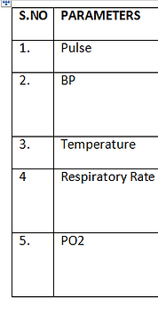Following symptoms were encountered during the Research and their correlations with frequencies they represent were studied to establish an accuracy of Diagnosis.
Following Diseases were encountered during the Research and their correlations with frequencies they represent were studied to establish an accuracy of Diagnosis.
ACCURACY CORRELATION WAS DONE BASED ON :
Correlation of Parameters recorded with Voice analysis Graph:
All Vital Parameters as recoded in First Point of Contact were matched with the frequencies detected as : Missing/Weak or Hyperactive and their associations
Correlation of Symptoms/Complaints with Voice analysis Graph:
All complaints and symptoms were matched with the frequencies detected as : Missing/Weak or Hyperactive and their associations
Correlation Lab tests reports with Voice analysis Graph:
All Lab tests reporting were matched with the frequencies detected as : Missing/Weak or Hyperactive and their associations
Correlation of Organ/Organs involved as per Diagnosis-and Voice Grid
After all lab tests and Diagnosis reports, we compared them using voice analysis grids and matched the Frequencies of Organs that showed disease or weakness
For Accuracy Analysis we created 10 Categories
98 patients ,with /without multiple diseases both Male/Female in the age range 10-84, with or without any Diseases, who attended the OPD of Krishna Heart Care, Jaunpur, UP, India were a part of this Research work
RESULTS
A total of 98 patients , both Male/Female in the age range 10-84, with or without any Diseases, who attended the OPD of Krishna Heart Care, Jaunpur, UP, India were a part of this Research work
For the purpose of ease we divided all patients into Different categories
A total of 98 patients with 135 Diseases and who presented with 45 symptoms and Complaints, were Studied in this Research Project
Each Category of Patients were tested for accuracy of voice analysis by:
Frequency correlation With Complaints/Symptoms
Frequency correlation With Lab tests
Frequency correlation With Diagnosis/Involvement of Organs
CATEGORIES:
CATEGORY: HEART Patients: 35
A total of 35 Patients both Male/Female with 10 Different Heart Diseases were studied for accuracy with Voice Analysis and were correlated with, these 3 Parameters for coming to a conclusion
The frequencies responsible for Heart Involvement were checked in each patients voice analysis Grid and a final conclusion was thereafter drawn.
A total of 3 frequencies are responsible for Heart Involvement and also the symptoms or Complaints the patients present with.
Heart is represented in our body by a total of 3 frequencies
2 Major Frequencies
1 Minor Frequency
Following was the correlation with Frequencies involved:
12 CASES Presented with 1 frequency missing
11 patients presented with 2 frequencies missing
8 patients presented with 3 frequencies missing
All patients with Heart Diseases upon Voice Analysis had 1-3 frequencies Missing or weak
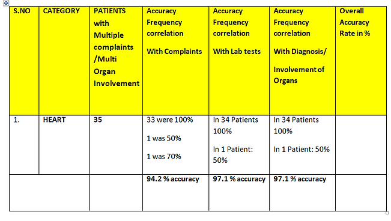CATEGORY BLOOD PRESSURE: 14
Blood Pressure is indicated by 4 Frequencies: that could either be missing or weak
IN all these cases the body frequencies representing BLOOD Pressure were involved.
Following was the correlation with Frequencies involved:
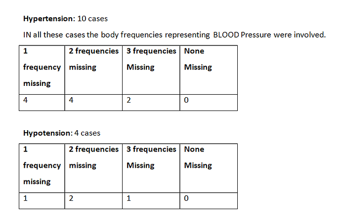 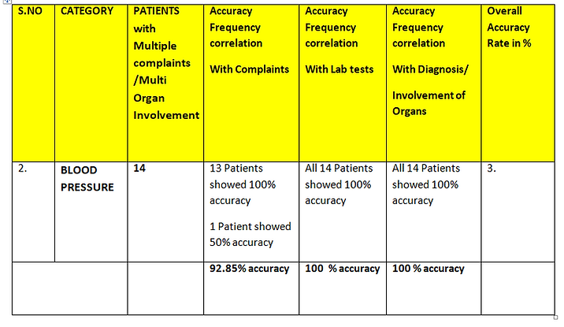CATEGORY DIABETES: 18 CASES
Diabetes is indicated by 2 Frequencies: that could either be missing or weak or Hyperactive
In all these cases the body frequencies representing Diabetes with Involvement of Pancreas were shown either Missing or Hyperactive
Following was the correlation with Frequencies involved:
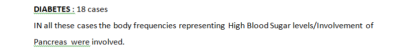 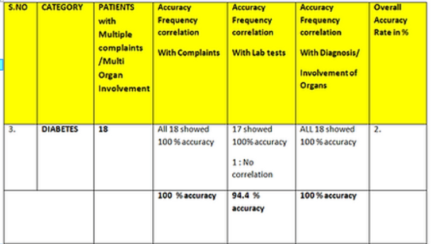CATEGORY THYROID DISEASES : 6 CASES
Thyroid Gland is represented by 2 frequencies in the human body
In all these cases the body frequencies representing Thyroid diseases with Involvement of Thyroid Gland were shown either Missing or Hyperactive
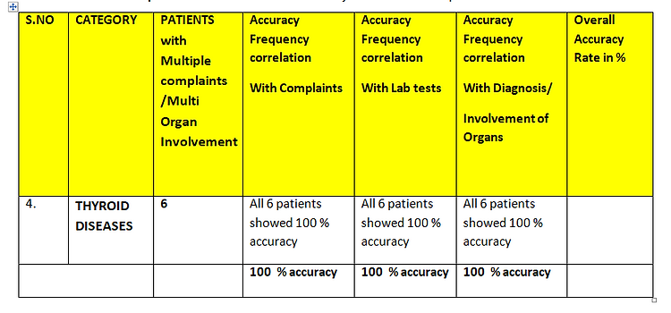CATEGORY LIVER DISEASES
Liver is represented by 1 frequency in the human body
Following was the correlation with Frequencies involved:
10 cases with Liver Diseases also had Missing or Hyperactive frequencies representing Liver
In 2 cases no correlation was seen in terms of Liver Diseases and Body frequencies involvement
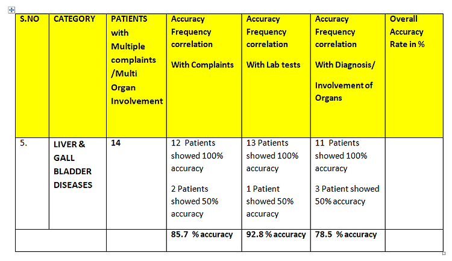CATEGORY ANEMIA : 8 cases
Anemia is represented by 2 Frequencies :
5 case Presented with Weak frequencies
1 case presented with Hyperactive frequency
IN 2 CASES no correlation could be established
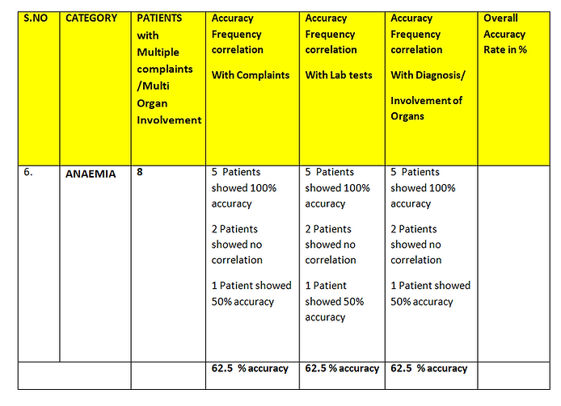CATEGORY KIDNEY DISEASES : 3 cases
Kidneys are represented by 2 Major frequencies :
All 3 cases presented with Missing or Weak frequencies representing kidneys
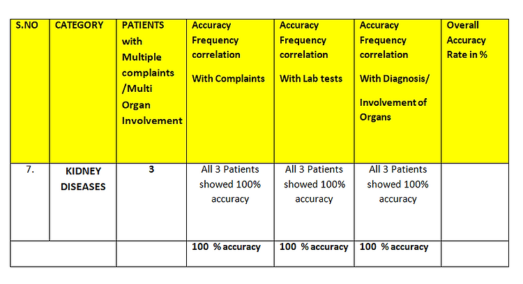CATEGORY: JOINT PAINS: 15
Joint pain are represented by a 4 frequencies:
IN 11 CASES these frequencies were either weak or Missing and giving them Joint Pains
In 4 cases no correlation could be established
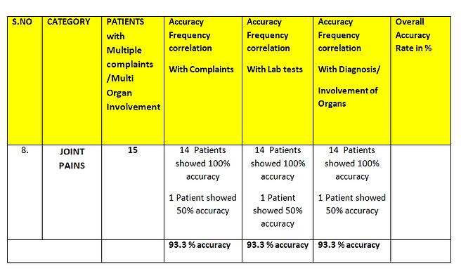CATEGORY: ANXIETY NEUROSIS: 10 CASES
Anxiety neurosis is a set of emotions associated with or without any disease.
The octave to look for Anxiety neurosis is different than the octave to look for Organ involvement
However we correlated the symptoms and complaints to reach our accuracy
8 out of 10 cases showed symptoms of anxiety while 2 didn't have any correlation with their symptoms and diagnosis made by the physician.
This category there fore requires a larger study group to come to a final conclusion.
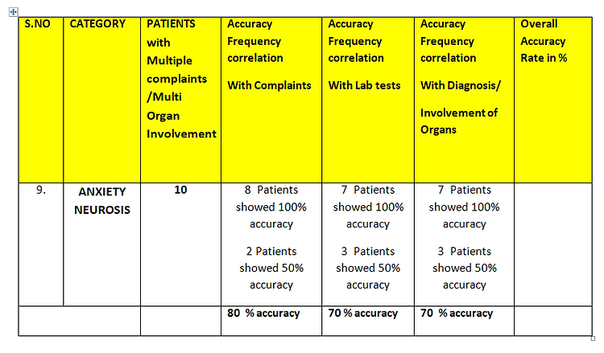CATEGORY: MISCELLANEOUS: 14
This category included those:
Regular check up: 6
Abdomen involved : 2
Infertility :1
Vertigo : 2
Laryngitis : 2
Migraine : 1
4/6 for regular check up matched their symptoms with missing or weak frequencies
2/2 cases of abdomen involvement showed 100% accuracy
1/1 infertility showed missing frequencies matching their disease
½ vertigo patients showed missing frequencies matching their diseases
½ Laryngitis patients showed missing frequencies matching their diseases
1/1 Migraine patient showed missing frequencies matching their diseases
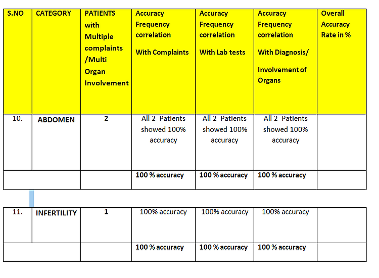 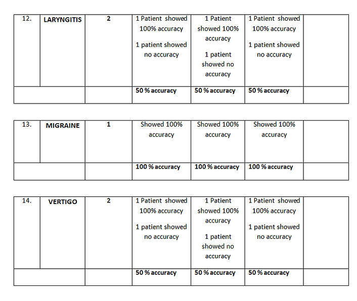CONCLUSION
The Health care industry is a fast growing and changing paradigm in the recent times and especially Covid-19 has generated much awareness and infused seeds of newer technologies that are coming up fast to keep pace with the Requirement and need of the hour.
Voice Analysis as a new diagnosis tool that fulfills all guidelines for secondary disease prevention: 1984 GENEVA CONVENTION: W.H.O is not only evolving with respect to its early diagnosis capabilities in cases with no symptoms to its ability to diagnose diseases at par with the traditional diagnosis tools like X-RAY, ECG, Doppler, ECHO etc
Voice analysis has shown to have excellent diagnosis capabilities and accuracy correlation with greater than 90% in all categories selected for research, with the Traditional Diagnosis tools.
Understanding Body frequencies in details in therefore the key to understand the Human Body Dynamics so that we can utilize this knowledge to learn and implement it further for diagnosing various diseases with less hazardous and less painful and less expensive procedures.
Bibliographic References: